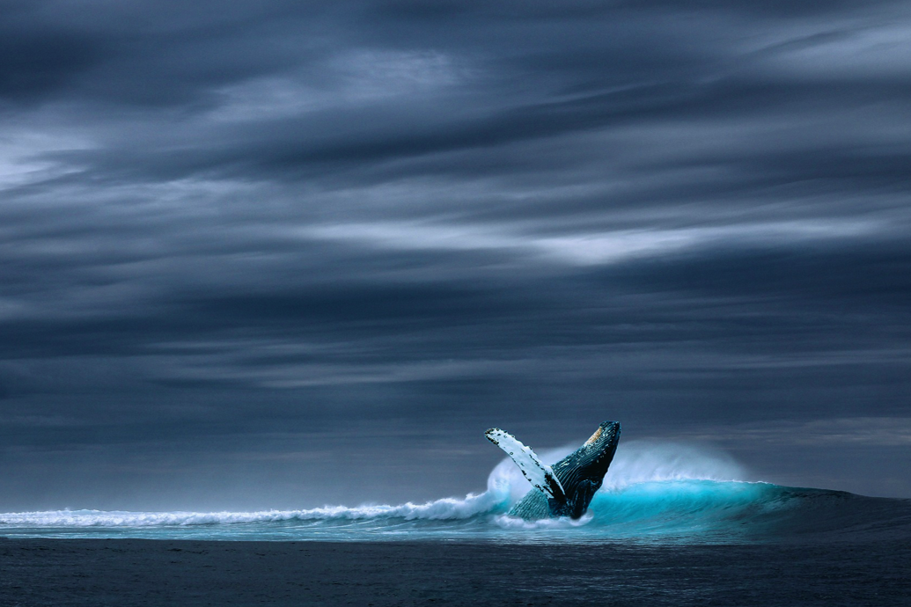
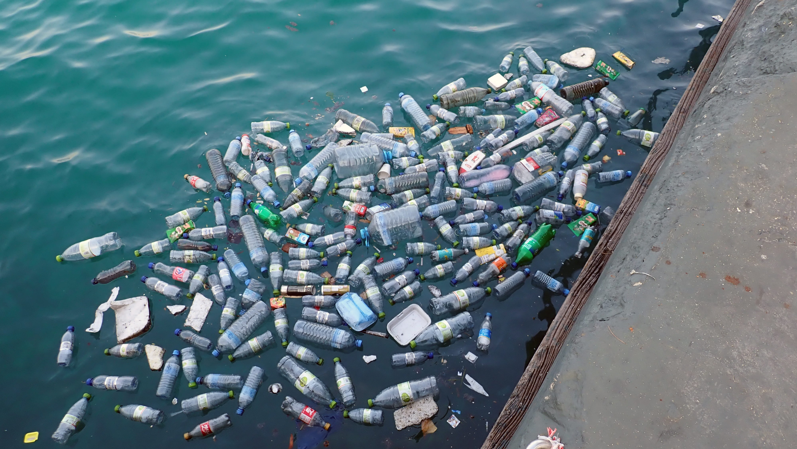

Tu t'es glissé entre ses fanions, dans sa bouche, son oesophage et jusqu'à l'estomac. Un drôle de bonhomme t'y attend.
Tu t'approches, piqué par la curiosité. Il te faut nager dans une bouillie acide pour le rejoindre : il s'agit des restes de milliers de tonnes de plancton digérées par les sucs gastriques. Toi même, tu finiras bientôt décomposé. Mais ça ne t'effraie guère ; depuis le début de ton long voyage, tu n'as de cesse de mourir et de renaître sous une nouvelle forme.
Par chance, le plancton émet une douce fluorescence qui éclaire ton chemin. Tu parviens enfin à la hauteur du bonhomme qui se dresse victorieusement, droit comme un i dans la bouillie. L'acidité n'a pas eu raison de lui !
- Eh, salut ! Qui es-tu ? Tu attends là depuis longtemps ?
Il ne te répond pas. Tu lui tournes autour, au sein de ton pauvre plancton qui commence à perdre des bouts de peau et de mandibules attaqués par l'acide.
C'est alors que tu comprends que ce bonhomme n'est en fait qu'une figurine, un jouet de plastique qui représente un Pinocchio. A bien y regarder, tu réalises qu'il n'est pas le seul morceau de plastique avalé par la baleine.
Tous ces petits pics de couleur qui dépassent de la bouillie,
sont des restes de bouteilles, des bouchons, des pailles et mille objets que tu ne parviens plus à identifier. Si la baleine finit par te digérer, tout ce plastique s'accumule dans son estomac et ne sera jamais dégradé. A force, la baleine finit intoxiquée. Petite, elle aura survécu aux orques, puis aux baleiniers, mais c'est finalement de vilains bouts de plastique qui lui ôteront la vie.

C'est la fin pour ton voyage. Dommage, il aurait pu mieux se finir... Pour s'assurer qu'à l'avenir, nos histoires soient plus joyeuses, je te propose un défi :
C'est facile, il y a tant d'alternatives ! Nous pouvons emmèner un sac au moment de faire les courses, un mug pour la pause café, des pailles en métal... Il est toujours possible de demander au boucher, au japonais ou au libanais du coin de nous servir directement dans un tupperware, plutôt que d'utiliser une barquette en plastique. Nous pouvons aussi préférer les légumes non emballés du supermarché, ou même les acheter au marché. Il y a tant de savons et de shampoings secs zéro-déchets, de recettes de liquide vaisselle ou de lessive maison.
De vraies potions d'apprentis sorciers !
Réfléchissons aussi avant d'acheter des babioles, de la déco en plastique, c'est tellement kitch. Idem pour les vêtements qui sont en général composés de fibres de plastique... Et il mieux vaut les laver à 30°C pour éviter que tout ce plastique ne se dégrade, parte dans les eaux usées et finisse dans l'océan. Le plastique dans l'eau s'accumule dans tous les êtres vivants, même nous qui buvons de l'eau et mangeons du poisson. Il nous intoxique à petit feu...
C'était pourtant sympa l'époque des playmobiles et des pailles au McDo... A nous de réinventer un monde sans plastique et tout aussi sympa.